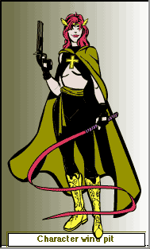
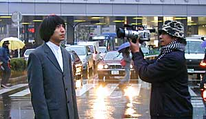

(日記とか言うモノ)
さあ、今の内だ！今年最後の日記。いろいろやりたいこといっぱいあったなあ、もっと自分の時間が欲しいねえ。
サムライジャック24時間放映がいよいよ始まりますわな。でもこれから初詣でやんす。いってきまーす。
ようやく、新刊のレビューアップ。
ま、そんなことはどーでもいいんですよ！おそるべき事実が発覚したんですわ。
なにげに楽しみにしている電子鳥人Uバードを見てると、番組の終わりに来月からの放送予定の告知が。ふーん、今度からこの時間はスーパースリーがやるんだ、Uバードはどこに移動かな。。なんて思ってたら、無い！
よーく来月の番組表を見てみると、宇宙怪人ゴーストと電子鳥人Uバードがまるっきりなくなってるじゃないですか！！！！！！！なななななんてこったぁあ。
永遠にやってるような錯覚をおぼえていたんですが、それは幻想だった。ちきしょう〜CNのバカ〜！まだ全部みてないんだぞ〜。あのさあ、CNよ、ドンデラマンチャとか流してるヒマあったらスペースゴーストやれっての！だいたい新シリーズだってやってないだろ。とにかく、CNで日本のアニメなんか流すな。そんなの期待しちゃいないっての。
無くなってわからる大切なもの。ああ、オレはスペースゴーストとバードマンをこんなにも愛していたんだ。あああ。・・・・とか嘆き悲しむ人はは日本ではどの程度いるのだろうか。あんまりいなさそうだなあ・・・
連日の忘年会（？）で死にそうな私。昨日は徹夜の飲み会でもうヘロヘロ。
しかし、みんな元気だよなあ。
正直に言えば、大人数の飲み会って苦手。しかも酒も苦手です。（飲めないんですよ）そもそもみんなでわーっと騒ぐてな「お祭り」的なものは苦手なんですよ。すぐに醒めて帰りたくなる。だからお祭り好きな人も苦手。
酒はねえ、好きな人にはわからんだろうけど、私にとっては「気持ち悪くなる液体」以外なにものでもないんですよ。それを笑顔で飲まなきゃいけない苦痛はなかなかわかってもらえないことが、また苦痛。
とか、正直に言っちゃうと誘ってくれなくおそれがあるので普通は言いいません。
だって、キライじゃないですから。実際、いろんな人との飲み会は楽しかったし。それでも、自分一人の時間が欲しい自分は「あー早く帰りてえ」とか思ってしまう。このアンビバレルツな感情はわかっていただけるでしょうか？
うーん、例えば「映画は好きだが、痔なので長時間座るのが苦痛。映画は楽しいが早く席を立ちたくなる」みたいなことでしょうか？全然いいたとえじゃないし、ちょっと言いたいこととずれてますが。
「ほめてくれるとうれしい、でもそれがうっとおしい」「いいものを見るとわくわくしてくる、でもなぜかイライラする」「仲良くなりたいが、深くはつきあいたくない」とか、人間の感情とは不思議なものです。でもそーいうものなので、「そーいうことをわかって欲しいが、気にして欲しくない」なんてのもあるわけで、難しい。
いったいどっちや！と自分でも言いたくなるが、どっちでもあり、どっちでもないので、どっちかに決めることそのものが間違いってことは世の中にはたくさんあるんじゃないかなあ。
クリスマスも無事（？）終わりましたな。
それにしても、クリスマス用のケーキってどうしてあんなにマズそうなんだろうね。実際マズいし。絶対普段のケーキの方がウマいって！
しっかし、時間がとれねえよなあ。まだ仕事が忙しかった時のほうがなんとかやりくりできるってのも不思議だ。世間的にもどうやら仕事納めってことであちこちでヒマになり始めたのか、身内をはじめいろんなお誘いが。
こういうのって、かわしにくいんだよねえ。仕事と違ってへたすりゃ時間無制限だし。
ああ、自分の時間が欲しい。
でもこういうことにもつきあっていかなくては、引きこもりになってしまう。ちょうどいいのかもしれん。
昨日は身内に捕まってしまい、家族サービスをするはめに。
敵は内にあり。仕事もそろそろ一段落かと思ったら、今度はこっちかよ。
そーいやすっかり忘れてたけどもうクリスマスなんですよねぇ。
どーでもいいんですが、どーでもよくないイベントですなあ。
それはともかく、ようやくパワパフの新刊ゲット。
ついでにまんがの森渋谷店（THE COMIX）に寄ってみた。
うーん、ほんとにリニューアルしたの？揃いが良くなったわけでもないし、普通に日本のコミックスも置いてるじゃん。専門店化したって割にはなんか中途半端な感じ。これからの入荷しだいかなあ。
でもパワパフの古いコミックスのバックナンバーがあるのはちょっと貴重かも。ご祝儀ってことで、スペースゴーストのコミックを買ったりして。
ついでに、パワパフエッグ2も買ってみた。おお、まともにコミック以外のパワパフグッズ買ったのって初めてかも。中身はギターブロッサムでした。ちょっぴりうれしい。缶バッチとかだったらどうしようかと思ったけど。
これからクリスマスが控えてるので、コミックレビューはちょっと遅れそうですが、まあノンビリといこうじゃないですか。
一応、今回の話は、モジョがボコられまくる話。ファジーVSモジョ！ モジョの息子？の2本です。んがっとっと。
ふと見ると、スカパーの契約更新のハガキが手元に。
コトン。
はっ！オレはなにをしてたんだ？ いつのまにやら、ニコロデオンに契約のチェックをいれてポストに投函しとる。てなわけで、すっかりニコロデオンの毒にやられてしまったようで、ニンともカンとも。
さて、ふと帰って適当にスカパーのチャンネル変えてると、「なんじゃこりゃ？」
すっぱだかのねーちゃん達が空とんでるアニメのオープニング。どいつもこいつも服きてません。乳まるだしでぐるんぐるん。しかもよく見ると、いのまたむつみっぽい絵ですな。えーと、変なPPVのチャンネルってわけじゃねーよな、なんですかこれは？
答え：ブレンパワード
WOWWOWでやってたサンライズのロボットアニメ。名前だけは知ってたけど見るのは初めて。しっかし、さすがというか、無茶というか、全話一挙放映ですよ。さすがスカパーのチャンネル。こーいうことサラッとやるからなあ。
てなわけで、なんとなく見てたうちにハマって、夜中までTVの前にいることに。なにしろ今日一日で全話ですよ。もうアホか。あ、オープニングはアレでしたが、話は別にアレじゃありません。つーか一言で言うと「ママンかまってよ！」てなお話。＜なんじゃそりゃ。 もうお腹いっぱい。
ああああっ！パワパフの新刊買いに行くのわすれた〜！！！！！
20日といえば、スカパーの無料開放日。
といっても、全部じゃないんですけどね。ケチくせえチャンネルもあることはある。
ま、それはともかくだ、そんなわけで、裏ページやってちょっと興味もった「ニコロデオン」を見ることに。（ここは契約してなかった）
すすすげえ！狂ってやがる。おもしれえよココ。
カートゥーンネットワークだけ見てカートゥーンを語っちゃいけないなあと、深く反省したり。カートゥーンネットワークは良くも悪くも、ハンナバーバラのカートゥーンなんだなあ。もちろん、違うのもいっぱいあるけどね。ワーナーも混じってるし。TOONAMIとかはなんかジャンプみたいなノリだし。
ただ、こっちは、なんていうのかなあ、24時間ポンキッキていうのかなあ。バラエティさからいえば、NHK教育みたいな感じか？（全然教育的ではないと思うが）
特に気に入ったのはカブラム！やべ、ちょっぴりジューンがカワイク見えた。
まあ、この番組こそポンキッキみいたいな番組でして、いろんなアニメ（セル・クレイ・実写）のアニメ番組がごっちゃになってるという。その中の一つに「アクション・リーグ」てのがあるんですよ。ジャスティス・リーグみたいといえば、みたいなんだが全然違うぅぅ！そこらへんの適当な人形を使ってごっこ遊びするしてるような、そんなやつ。うーん、うまく言えないなあ。ほら、そのへんの人形もって「へーい、なんとか」「チーフ！出動はまだですか」「あらやだ、なにやってんの」・・・・みたいな〜！アニメですらないんですよ。もう、そんなのを普通に撮っただけみたいな〜。しかも内容は激しくバカバカしくって。
あと、ジェットキャットって（こっちはセルアニメ）もあるんですが、ちっちゃな女の子のスーパーヒーローもの。そーか、パワパフだけじゃなかったんだなあ。ただ、こっちは多分「萌え」ってやつは無いかと・・・・
それから「レンとスティンビー」もスゲエ。カウチキ初めて見たとき「狂ってやがる」って思ったんですが、こっちもそれ以上に狂ってるかも。一応正当派カートゥーンのふりしてますが。しかし、これどっかでみたことあるなあ。アメコミで出てたような記憶が・・・・
そうそう、キャットドック。これもすげえ。もうメチャメチャフリークスですよ。いいのかおい！胴体の頭とお尻が猫と犬！いや、どっちも頭か。
スカパー入会当初の無料お試し期間中はパワパフとツール・ド・フランスばかりみてたからなあ。もっとチェックしときゃよかった。
風邪はやっとりますなあ。
私も一応ピークは超えたものの、また調子は万全てわけでもなかったり。いまだに鼻声。しつこいねどーも。
webの日記みたいのいろいろ見て歩くと、あちこちで「風邪ひいた」「調子わるい〜」とか見られるんですよ。もちろん、身近の知人たちも風邪ひきまくり。いやもう、すごいね。なぜかドラえもんの「猫しゃくしビールス」を思い出しました。
なんとなく、またぶり返しそうなんで、日記もこのへんで。
不摂生な生活はなんとかしなきゃいかんと思いながらも、いろんな事情でそうにもいかず、悩ましいとこです。
アクセス解析はずしてみた。
なんか借りてるとこのCGIの管理がインフォシークに移っちゃって、継続するには変更作業しなくちゃなんないのと、インフォシークのIDをとんなきゃいけないってのが面倒くさくてやめました。まあ、少しはおもしろかったけど、別にあってもなくてもどうでもいい目蒲線のようなものだったので、別にいいや。
そーいや、インフォシークってほとんど使ったこと無いや、って思ったのでちょっと覗いてみたら・・・なんと無料webスペースが50Mですと！
ここで、ふと気になって今のtripodのサーバスペース使用量を調べてみると、
「あなたは現在、12 MB のスペースの内、10 MB使用しています。残りスペースは1.9 MBです」
げげ、あと約2MBしかないんですか！ていうかいつのまにやら10MBも使ってたのか。ちまちまと軽めに作ってきたつもりなんだが、もうそんなに・・・このペースでいくと、容量いっぱいになるのも時間の問題か。どーしよ。
50MBのインフォシークに引っ越すか？と思ってよくよく見てみると、ここのwebスペースうっとおしいね。ポップアップバナーだけかと思ったら、ページの上下にも入る。最悪や。
かといって、tripodを広告なし、容量アップに以降するには月980ポイント（980円相当）かかるってのもアホな話。そんな金あったら普通にサーバレンタルできるっつうの！なんだかな。
まあ、まだ余裕はあるからいいとして、そのうちサーバ移転も考えようかな。ちょろっと探してみると、無料なのに100MBとか容量無制限とかあるじゃないですか！ほほう、おもしろそうだ。広告の入り方次第だな。
どっかいいとこありますかねえ。tripodもそんなにキライじゃないんだけどね。バランス悪くないから。
私は松本零士が好きである。特に好きなのは「昆虫皇帝」と「魔女天使」
ま、それはともかくだ。ハーロックのOVAがちょっとばかし話題みたいですね。「999」とか「エメラルダス」とか「ニーベルングの指輪」とか「コスモウォリアー」とかずいぶんと新作松本アニメがいっぱい出たけど、これがトドメでしょうか。（あれ、ガンフロンティアもそうだったっけか？）個人的には「ミライザーバン」をやってほしいなあ。さすがに、今の丸くなった松本御大では「ワダチ」は無理そうだが。（日本人以外は皆死ね！なマンガ）
そんなわけで、松本ネタでwebをさまよってると、トンデモナイものを発見！
これは期待していいのか？しないほうがいいのか？
実写版北斗の拳（ハリウッド製）を知ってるだけに・・・・
ちなみに、ハリウッド版のほうはそれなりに有名だが、ほとんど知られてない韓国版実写北斗の拳てのがある。（多分無許可で撮ったと思う）それはこちら
直リンしちゃったけど、このサイトはおもしろいから、トップからみてみてね。すでに実写版ドラゴンボールもあるよ。＞かに温泉／炎
フガフガいってるうちに、もう12月もなかば。月日のたつのは早いものだなあ。
なんだか、薬の副作用なのか寝てばっかり。メシ食って、薬飲むと、すぐ眠くなって、グーグーいってます。
これがまた、気持ちいいんだよなあ。特にこの時期の布団は最高ですね。
それにしても、社会に出てからずいぶんとたつというのに、いまだに学校の夢を見るのはなんなんでしょうか。それも教科書忘れてどうしようかとか、試験が近いのになんにもしてないとか、英語の読みの順番が回ってくるのに予習もなんにもしてなくてどうしようとか、そんなのばっかし。
やべえやべえ、と焦って目が覚めて、ああ、いいんだ、もうそんなことで悩まなくていいんだ、とほっとする瞬間はちょっと幸せだったりします。確かに社会のほうが厳しいんだけど、あの時期のあの時ってのはまた別の苦しみなんですな。一概に比較はできんよ。
関係ないけど、先生に言われて嫌なセリフってのが「そんなんじゃ社会じゃ通用しないぞ」みたいなセリフ。
これを大学でてすぐ教師になった先生には言われたくない。だって、あんた社会に出てないじゃん。一生学校というちいさな場から出てない人てのもいるんだよなあ、世の中には。
スカポン太、死の淵から復活！
しばらく休養とったおかげで、万全とはいかないもの、体調はまともになったかな。
さすがに木曜は会社休んで病院にいきましたよ。
もっと早く病院にいきゃよかったんだろうけど、病院て、やなんだよなあ。いい思い出ないんだよ。
バイクでこけて治療に行ったときは、帰ってきたときには風邪うつされたし、
激しい胃痛でいったときには、1時間も放置（待たされて）されたし。
午前中に行くと、ジジババが山のように待機していて、なかなか順番が回ってこないんですよ。脇でオレが「うぐぐぐぐ」と悶絶しているのをよそに、医師にむかって世間話してるってのはいかがなものか。病院は井戸端会議の場所じゃねえっつうの。そんときは呪いましたよジジババを、ええ。・・・・でも、その間に胃痛が直ってたりして、激しくバツがわるかったなあ。「いや、さっきまでは死ぬほど痛かったんですよ、もう死ぬほど・・・・今はなんともないんですが・・・・・」みたいな。
で、今回も30分ほど病人ども（オレもそうだけど）に囲まれて放置。大丈夫か・・・大丈夫なのか・・・
やっぱり世間話してるババア年輩者がいるし。そーいうのはサイコドクターのもとにいけっつうの。カウンセリングは専門外だろ？いやいや、これが日本の医療の現実なんだろうなあ。医者の方々も大変ですな。
担当にあたった医師の方は気さくなかんじで、まあよかったかな。
しかし、「ふーん、どうも胃腸のほうも荒れてますねえ。胃潰瘍かもね、はっはっは」って気楽に言うな〜。
でもそーいうのは好きです。しばらくしたら、胃腸の方も検査しにいってみるかな。
そして、クスリ漬け医療・日本を実感。なんじゃこのクスリの量は？風邪薬一つかと思ってたら、鼻水を抑える薬、炎症を抑える薬、痛みを和らげる薬、そんでもってそれらを使うと胃が荒れるから胃の薬、エトセトラ・・エトセトラ・・全部で8種類ほどの薬を処方されました。こーいうものなのか？製薬会社と癒着してんじゃねーだろうな？まあ、いちいち薬の名前や効能、副作用とか教えてもらえるのはよかったけど。
えーとこの薬の副作用として、激しく眠くなるってのがありまして、おかげで眠りっぱなしでした。木曜はよく休養とれました。
しかし問題は金曜日。「あ、スカポン太くん、金曜はこれるよね、急ぎの仕事があるんだよ、当日中に仕上げなきゃいけないんで、必ず金曜には風邪直せやゴルァ。直ってなくても来いや！・・・そうそう、金曜は忘年会もやるから、急ピッチで仕上げるよーに！」
渡る世間は鬼ばかり・・・・
ひーひーいって、仕事して、その夜には酒飲まされて・・地獄のような週末。
とりあえず、今日は完全休養したおかげで、なんとか回復。やっぱ健康っていいね。
風邪がきつい・・・こことBBS書き込むのがせいいっぱい。こんなことしないで寝てろよ、オレ。いや、一応、これも自分のための記録だから・・・。なに自問自答してるんだか・・
突然、ひどい風邪をひきました。へろへろして、もーろーとして、だめだこりゃ。
なにが嫌って、メシがうまくなくなるのがなあ。味しないんだもの。バタン。きゅ〜
某所で教えてもらった「ヒーローマシン」てなFlashがあるんですが、これがまた面白い。
いわゆる着せ替えソフトなんですが、非常に細かくて、目とか髪とかマスクとか、コートとかブーツとか、武器とかを組み合わせて、スーパーヒーローを作成できるつうしろもの。色も選べる。
スーパーヒーローだけでなく、ファンタジーキャラも作れます。
The HeroMachine＜ここなんですが、Flashなんでオンラインでも、ダウンロードしてもOKなうえ、Mac,WinどちらもOKときたもんだ。
ただ、ちょっと色のバリエーションが少なく、かつ標準の色はどーもあんましよくないような・・・・もっと自由に選べるといいなあ。
使い方は簡単で、まずカテゴリー（ファンタジー、ヒーロー、スポーツ）を選び、その後ベースになるモデルを選びます。そして男か女かを選んだら、着せ替え開始！
右のパーツボタンを選んで、「＜」「＞」ボタンでパーツを切り替え、下の色チャートで色を選ぶ。
英語だけど、まあ、いろいろやってりゃだいたいわかると思うよ。
そんなわけで、作ってみたのがこれ。名前は「Wind pit」

どーかね。
えー、CSで極真の「地上最強の空手」をやってるんですが、いやー総裁お元気で 。ウイリーだよウイリー！ホントにクマと戦ってやんの！・・・・まあそれはいいとして、コレ見て、前から思ってた疑問の一つが解けたようなきがしました。
ミュータント・ニンジャ・タートルでカメたちが武器を持ってるんですが、その武器というのが「日本刀」「棒」「ヌンチャク」そして「サイ」なんですよね。そーいやデアデビルのエレクトラもサイをもってたっけか？
基本的には日本武術をベースにしているんですが、なぜに「サイ」？と不思議に思っていたんですよ。なにしろ、日本人ですら知らない人の多い、三つ又の小刀。ちょうど十手が片側だけにL型に刃が出ているのと似ていて、こちらは両側にL型刃が出ている形です。
それがね、「地上最強の空手」を見ていると、型の一つとして「サイ」を使った演舞とかやってるんですよ。もしかしたら、この影響で「日本刀」並に日本の武器として、アメリカではメジャーになってんじゃないかと。他にも棒術の演舞もあって、これもそうじゃないかと。
ちなみに、ヌンチャクを中国の武器と思っている人が多いかと思いますが、違うらしいですよ。
中国のは「双節棍（ヌンチャークン）」で、これが沖縄に入って、サイズが小さくなったのが「ヌンチャク」。
そんでもって、「サイ」もまた、中国の「叉」が沖縄に入って変化したのが今の「サイ」。
ついでにいえば、「拐」がこれまた沖縄に入って、武器となったのが「トンファー」。
空手は沖縄の武術「手」がルーツとされてるんで、これらすべて日本の「空手」の武器ってことになるんですよ。（正確には沖縄の武器ですけどね）
・・・と偉そうに言ってるが、私も最近知った。
いっけんトンデモ日本観のように見えて、実は日本人のほうが無知でトンデモに見えてるってことも、世の中には多いのかも・・・などと思ったり。
そーいや、ビデオキャプチャーも欲しいなあ。でもうちはMacがメイン環境なんで、選択肢がないんですよね〜。
一応win機もないこともないけど、USBなにそれな機種なんでどーにもこーにも。
いっそのことHDレコーダ買ってそっちでキャプチャするか？とか思ったんですが、どーなんだろ。やっぱり転送とかで問題あるんかなぁ。よくわかんないや。これから調べてみるか。
つーかね、古いビデオ見ようかと思ったら、音が出ないんですよ。うん十年も前のやつじゃないのに。やっぱ磁気テープはもたないのかなあって、思いまして。それに気のせいか、重録りした下の映像とかも見えてきているような・・・
でもよくよく考えたら、ビデオとかそんなに見返したりするほうじゃないので、録ったはいいが、無駄にストックしておくだけになりそうなのが怖い。
そもそも、世の中、できることは増えても、できる時間をつくる方が大変なのです。
109-2の写真は知人から借りたデジカメで撮りました。
そう、私デジカメもってないんです。
もうチョットまったら、もっといいのが・・・と思い続けて数年。買えないスパイラルってやつですね。
しかし、もういいかげん買おうかと。
で、激しく迷ってるんですよ。
オリンパスやパナの10倍12倍のウルトラズーム系か、気軽に持ち歩けて、あっと思ったときにすぐとれる超コンパクト系。このどちらにしようか超悩みまくり。解像度とかは 200万画素もあれば十分なんですけどね。
使用頻度とか考えると超コンパクト系のほうがいいんですが、あのウルトラズームには引かれるんだよなあ。デジタルズームとかと合わせれば30倍強ですよ、あなた！うううううううんんんん。悩む〜。でも、そうそう使わないだろうし、ポケットに気軽に入るくらいじゃないと、ほとんど持ち歩かないだろうし、どーしよ。
そうか！両方買えばいいんだ！・・・・無理言うなって。
もうちょっと待てば、もっとコンパクトなウルトラズーム機もでるのかなあ・・・それじゃまた買えないよ！だめじゃん。は〜ぁ。
みなさんいかがお過ごしでしょうか、スカポン太です。
今日は珍しく早く帰ってこれたので、久々にV.I.P. が見れてラッキーでした。（早いっていっても10時かよっ！）
ついでに、ついに見ました「X-MENエボリューション」こいつはコミックのころから、ちらほら話題になっていて、本国でアニメが放映されてからも噂はいろいろ聞いていたんですが、見たのは当然今回が初めて。
よく、バットマン・ザ・フィーチャー（ビヨンド）と比較されることのあるこの作品ですが、正直バットマンのほうが上かな。まだ始まったばかりなんで、判断するのは早計でしょうが・・・・うーん、どーなのかなあ？
なんかサイク（サイクロップス）のイメージが微妙に違っていて、ねえ。ちょっと軽くないか？サイク。もっと自意識過剰で、思いこみ激しいサイクをきぼ〜ん。ナイトクロウラーはまあ、あんなものかな。ジーンはあんまし好きじゃないので、まあどうでもいいんですが、大好きなローグとガンビットがどんな風になってるのかが、かなり不安。たしかガンビットは最初は対抗勢力として登場するんだったけか？
それよかマグニート様だよなあ。あんなノリに絡んでくるようなお人じゃないだけに、どういう扱いなのか悩む。
それにしても、ウルヴァリンとセイバートゥースのガチンコ番長対決には笑った。やつら舞台が変わってもやるこた一緒かいっ！
で、全然話違うんだけどさ、光学迷彩が実用化！？ はぁ〜、長生きはするもんだ。
109-2にいってみた。
激しく恥ずかしい。というより、怖い。おそろしいほどの場違いな私。
しかし、いやもう、店内はこれでもかってくらいパワパフポスターが貼ってあって、おもわずひっぺがしてもって帰ったろうかと思わずにはいられない。
地上波での放送が終わり、新作までまだ時間がかかるといった現在、パワパフのピークは過ぎたなんて言われたりもする昨今、キャラクターとしてはまだまだイケてるんだなあと。思ったり思わなかったり。
そもそも、放映ががないからといってすぐ飽きるのは日本人の悪い癖だ。サイクル早すぎるよ。むこうのキャラクターは息が長いからね〜。まだまだ、パワパフはいけまっせ。
関係ないけど、109-2に行く前にこんな人を見かけました。

ふかわりょう？ （撮影中のようですな）
パワパフとはかなり縁遠い男・・・・・
さすがに日記も遅れ気味。まあ無理せずいこう。
そーいや、アクセス元になんか奇妙な訪問があったので調べてみると、なんと韓国からのご訪問！
なんか、韓国のパワパフ？の掲示板かなんかでURLが載ってたみたいなんだが、
韓国語はまったくわからんので、これはいったいどーいう紹介のされかたしてるのか気になる〜。
ここなんですが・・・・・
うーん、さっぱりわかりません。わかるのは「Read me! Girls! 」ってフレーズのみ。あたりまえだが。
そーいや、パワパフって世界各国でも放映されてるんだよね。アメリカばかりに目がいくけど、あたらめて実感。
はふう、今週はきつかった。休めない・帰れない・寝れない
それもやっと終わり、こうやって日記をつけてる私。でも月曜朝から打ち合わせと、今週もきつそうだなあ。
そんな自分にご褒美と、今日は仕事帰りにグリム＆エビルのコミックをブリスターにて購入。うーん、やっぱバターカップにも負けない「しかめっつら」がデフォルトのマンディはやっぱいいな〜。
ところでこれ、グリム＆エビルのコミックだけかと思ったら、カートゥーンネットワークの新番組（？）の「KIDS NEXT DOOR」のコミックも載ってました。コミックというよりは、紹介予告編みたいなものですが。
これ、日本人の女の子もメンバーの一人なんですよね。スーパーミルクちゃんみたいな、だぶだぶソデ。これは狙ってるのか？しかし、名前が「クキ サンバン（KUKI SANBAN）」ってなんじゃ？？？